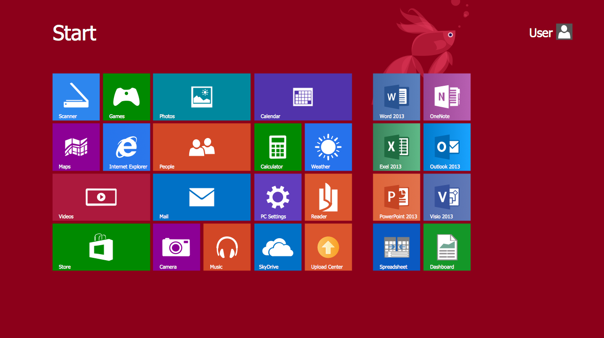

Eksamensspørgsmål 7
1. Forklar Ishii's model af tangible user interfaces
2. Redegør for forskellen mellem TUI og GUI samt hvad fordelene og ulemperne er ved hhv. de to
3. Relater gerne disse to begreber til jer porteføljer
Tangible User Interfaces

Tangible User Interface (TUI)

Håndgribeligt design der gør at brugeren kan interagere med det digital system, gennem det fysiske miljø
Graphical User Interface (GUI)
Grafisk digital design der lader brugeren igennem elektronisk enheder, såsom en mus, interagere med systemet
Fordele og ulemper (TUI)
| Fordele | Ulemper |
|---|---|
| Rigere bruger oplevelse | Ikke mobilt |
| Dybere forståelse for rumlige dimensioner | Mere komplekst at designe |
| Seen the unseen | Prædefineret |
Fordele og ulemper (GUI)
| Fordele | Ulemper |
|---|---|
| Mobilt | Ringere bruger oplevelse |
| Simple forståelse | Begrænset rumlig potentiale |
| Versatil | Kan ikke "see the unseen" |
Informationstanderen i Rosengårdcenteret